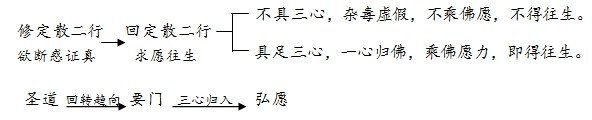

《观经》教眼
前言
《观经》是深具戏剧化色彩的一部经，引人入胜，义理甚深以至隋唐时代众多顶尖级的佛门大师，如释义高祖净影寺慧远大师，天台宗开祖智者大师，三论宗开祖吉藏大师(以下尊称诸师)纷纷为之作疏注解，但皆未能透彻佛意，甚至错解曲解;故有善导大师(以下敬称大师)出，奋而著《观经四帖疏》，楷定古今。
若论诸师，皆是智慧深远，名高一时，何以疏释《观经》而不知《观经》真义?确由此经意趣深邃，峰回路转，藏佛甚深密意;若不借佛眼，不明经眼，难免朦胧之见。
故读经研教，贵在得经眼、教眼，得此眼，在祖师即洞明幽微，在常人也能掌握根本;失此眼，虽高人只能摸象，若常人即一错到底。
《观经》教眼为何?依大师释，即：“虽说定散两门，意在一向专称。”大师特别于《观经疏·玄义分》“序题门”中拣为“要弘二门判”(“要门”“弘愿”二门之分判)。
诸师不悟此眼，故不作此判;大师独明此眼，故作此高判。而今学人，虽见此文，不识其意，漫然臆测，矫乱正说。大师愍我等愚，开我等眼，奈何强以双手自捂，误血色手掌为一片晴天。
“要弘二门判”为大师净土思想之重要组成部分，为大师区别诸师之核心教义理论，是净土宗教判理论的重大发展;它丰富和完善了净土宗整个教学体系，对净业学人具有拨云见月、万川归海的指导意义。
大师全部思想，《观经疏》一部释义，完全依据要弘二门之教判而展开。正确理解要弘二门判的内涵，便能把握大师思想之精髓，对要弘二门判的任何忽视、漠视、浅识，乃至误解、曲解、错解，必然导致全面误会大师净土思想，使大师绝妙释义混同于诸师粗浅义，影响学人信心建立、行法抉择，乃至最终废失往生。
大师为净土宗理论的集大成者，中国净土宗的实际创立者，其净土宗教学理论纯然接续昙鸾、道绰之法脉，如同诸宗各各拥有本宗特色的教学体系一样，大师所开显的净土宗具有迥异诸宗的独立完整的教学体系。
近年来，教内外对大师净土思想日益关注，这是好的现象。但由于大师根本著作在我国失传千年之久，致使国人对于大师净土教学理论普遍陌生，对大师“要弘二门判”之核心理论认识不足，乃至认识错误，也就势所难免。笔者不揣浅陋，试就大师“要弘二门判”探究其深广意义，期能澄清部分疑虑，并以抛砖引玉。
本文拟从以下几方面加以论述：
一、先说明一般教判之理由、目的、方法、特点，借以比较、印证“要门”“弘愿”之教判属性。
二、接着说明大师之前之净土教判，借以表明要弘二门判之必要性、必然性，并其在净土教判体系内的贡献、作用与地位。
三、正释要弘二门判。
四、明要弘二门判于《观经疏》之一贯相续。
五、设问答释疑。
一、总明教判
中国佛教以宗派佛教为特色，宗派的产生以教判为先声。“教判”即对佛所说教法之分类判别，大致有二：一是经中本有的教判，如大小、顿渐、半满、权实。二是释经法师根据佛经义理特别创设的教判，如天台之藏通别圆，净土之难易二道、圣净二门等。后者尤其能反映释家对于佛教的契入立场及主观目的。正是由于不同教判的成熟与推演，最终形成各自不同的宗派教学理论体系。
为什么要有教判，可说具有客观上的必然性。因为佛陀对机说法，经教浩繁，数越尘沙，如果不加以分类判别，行人茫茫，无所适从，所以必须进行教判。比如商品交易，如果只是小商贩，几种物品，用不着分类标贴;但大的超市，物品成千上万，必须分类标贴，才能开张经营，否则一团糟。佛教无量法门，如果没有教判，也会一团糟。
但怎样教判，仁者见仁，智者见智，取决于判释者的主观目的。也就是哪一种方法有利于将他所主张的法门从佛教无量法门当中凸显出来，便采取哪一种判教。比如面对同样一群人，如要招聘空姐，必首先按性别分类;录用教师，又按学历分类。在佛教，天台宗为了突显《法华经》之纯圆独妙，便用“藏通别圆”四教来判，而净土宗为了显示念佛易行超胜，即用“难易二道”之判。
教判的目的是为了推崇某一种法门，乃至依此法门而创立宗派。至于能否立宗，要看所作教判是否完善周全，能否言之成理，持之有据，形成一个有机的整体，在教判体系内，诸种法门既能各安其位，又能共崇所宗。譬如织帽之结顶，收网之提纲。
可知教判有“客观要求”“主观目的”“有机整体”三方面特性。
以此来看大师要弘二门之判，正好相当。这将在下文详细说明。
二、大师之前之净土教判
大师之前，已有龙树菩萨“难易二道”，昙鸾大师“自他二力”，道绰大师“圣净二门”之教判，一脉相承，明圣道即自力难行，净土为他力易行。如此教判，对比鲜明，毫不含糊，判者之主观意图显然，行人之择法方向明确。下劣凡夫，不堪圣道之自力难行，可入他力易行净土之门。
这三位祖师对于净土他力易行的判释，都是直接根据于阿弥陀佛的本愿——第十八愿，显明本愿称名之根本要旨。
如龙树菩萨判一代佛法为难易二道，其易行道虽列诸佛之称名，而以弥陀本愿称名为骨干，言：
阿弥陀佛本愿如是：若人念我，称名自归，即入必定，得阿耨多罗三藐三菩提;是故常应忆念。
昙鸾大师释“自他二力”，以他力即是弥陀本愿力，明“乘佛愿力，便得往生”，所谓“乘佛愿力”即是乘第十八愿——念佛往生愿之力，故引第十八愿文，而说“缘佛愿力故，十念念佛，便得往生。”
道绰大师判“圣净二门”，同样直取第十八愿为净土立教之本，指出“唯有净土一门可通入路”，言：
是故《大经》云：“若有众生，纵令一生造恶，临命终时，十念相续，称我名字，若不生者，不取正觉。”
三位祖师的教判表述虽异，用意全同，同源同味，直截根本，不夹枝叶，简洁明朗，一目了然。但从教判理论体系的建立来说，仍然留有空间。因为往生净土的行法，不仅仅只有第十八愿的本愿称名，第十九愿即说“修诸功德，临终来迎”，第二十愿说“植诸德本，必令果遂”。《观经》除称名外，说到十三定观、三福回向往生，而且品位在称名之上。诸大乘经，处处赞叹发菩提心，修六度万行，劝以此回愿求生极乐。那么第十八愿称名之外的一切行法，如果回向求生，算不算净土门?如果也属于净土门，它在净土教中处于什么地位?与本愿称名的关系又是如何?是难行还是易行?是自力还是他力?假定原来圣道门的行者，欲入净土门，只能陡然而入专修称名吗?还是别有方便转入?如何转，如何入?
诸如此类的问题，如果不能给予理论上的圆满回答，净土宗的教理难称圆满，广大的行人难趋指归。譬如一间房屋，梁柱房顶皆已完工，但缺四面围墙及门窗，人也不能安住，只能称亭阁，不能算房屋。
大师“要弘二门判”正是为了解决净土宗教学历史发展时期的这一重大理论课题应运而生，它是净土宗教学理论发展的必然趋势、必然结果，非此不能成立净土宗，非此不能称为净土宗，非此不能延续与完善历代祖师教判之伟大功勋，非此不能引导广大自力行人善巧转入净土门，非此弥陀本愿称名于一切行法中不能获得万善万行之王、独显独尊的地位，非此则“一向专称”的行法不能确立，非此则无量行人将如转磨之驴团转不进，虚假凡夫缺方便舟筏，自陷沉没。
而今大师“要弘二门判”，为虚假不实凡夫需要船筏驶入真实功德宝海，自力怯弱行人必借他力超入无为涅槃之乡，奠定了理论基础，提供了理论保障。
大师之前，净土宗“难易二道”“自他二力”“圣净二门”之教判皆判然二分，其优点是简洁明朗;其不足在于二道、二力、二门之间缺少方便的引导，尚未建立由难向易、由自向他、从圣入净的转进机制。
譬如两条平行的高速路，方向与目的相同，如果都通畅无阻，随便选哪一条都可到达目的地。但其中一条发生路障，如果有方便引道通往另一条高速，只要稍稍打转方向，通过引道转上，也能到达目的地。如果没有引道，或不知引道所在，只能车塞半途。
圣道自力之路，无人维护修理，险难坎坷，障碍重重，末法已不可通;他力弘愿大道，弥陀愿力住持，光明守护，永远畅通无阻。要门，正是从难行圣道转入易行弘愿的引道。
弘愿为净土正直之道，要门为从圣道转入净土的方便引道，有此要弘二门之教判，一代佛教圣净二门贯通一体，摄圣入净方便路通，末法无量行人得大欢喜，大安慰，大庆幸，大解脱。若无此教判指示，我等愚劣凡夫，慧心不明，将见死无归乡。
不知大师要弘二门判之深理，或以要门与弘愿判然隔别，老死不相往来，或指要门即为弘愿并无彼此分别，过犹不及，皆为浅见谬解。
三、正释“要弘二门判”
“要弘二门判”由两段文组成，一、“要弘分判文”，在大师《观经疏》最先，《玄义分》序题门。二、“要弘废立文”，在全疏最后，《散善义》释付嘱流通之处。首尾呼应，前后一贯，显明《观经》一部要旨。先开要弘二门，最终导归弘愿，虽说定散二门，意在一向专称。
要弘分判之文：
然娑婆化主，因其请故，即广开净土之要门;安乐能人，显彰别意之弘愿。
其“要门”者，即此《观经》定散二门是也。定即息虑以凝心，散即废恶以修善：回斯二行，求愿往生也。
言“弘愿”者，如《大经》说：一切善恶凡夫得生者，莫不皆乘阿弥陀佛大愿业力为增上缘也。
要弘废立之文：
上来虽说定散两门之益，望佛本愿，意在众生一向专称弥陀佛名。
(一)“要门”“弘愿”名词之含义
“要门”“弘愿”并非经中现成的名词，而是大师特别选立的名目，具有特别的意义。
1、先就“要门”
“要”有“简要”“重要”“必要”等义。
往生极乐之行门繁多，所谓“万行回向皆得往”，束而为二：一定善，二散善。此是简要之义。
又，修定散二善本来自求成佛，可这是难行道，下劣凡夫不堪，可说求出无门。今以此定散二善回向求愿往生极乐，即解脱门开。即此定散二善回愿求生，成为吾人解脱成佛的重要门户，故说“要门”。此是重要及必要之义。
门，出入为义，出生死，入涅槃，故说为门。
“要门”有分合两种读法，分即“定散二善”为要，“回愿求生”为门;合即总以定散二善回愿求生为要，也以此定散二善回愿求生为门。

问：若以简要为义，总说诸行，合为一类，比开为定散二行更为简要，何必说定散二行?
答：总说诸行回向也可，但只是就原状而说，而无义理上的简束分类，故不成简要之义。又说定散二行，略有四义：
一、顺《观经》故。《观经》既说十三观之定善行及三福之散善行，今顺之束万行为定散二行。
二、为显明“定善一门韦提请，散善一行释迦开”故，如不束为定散二行，即不能显明此义。
三、为显明定散二行回向求生为要门故。《观经》定善十三观不说回向，唯三福散善说回向求生。即此回愿求生，极乐门通。为突出此义，大师约散善文释三心回愿义，通摄定善行。
四、为显明三心(至诚心、深心、回向发愿心)为通摄定散行人归入弥陀弘愿之门。三心文出于九品散善之上上品，诸师释义，限于当品，大师以之通于九品，贯于十三定观。由此三心通贯定散二善，即通贯诸善万行。
2、次说“弘愿”
“弘愿”，全称“本弘誓愿”，略称本弘、本誓、本愿、弘誓、弘愿。
弘，广大之义，阿弥陀佛因中所发四十八愿，广大无外，普救一切善恶凡夫，所以称“弘愿”。
叙述阿弥陀佛四十八大愿的经典是《无量寿经》，简称《大经》，故说“如《大经》说”。
弘愿，有时总指阿弥陀佛四十八愿，但此处为特指四十八愿中的第十八愿，因四十八愿中说“一切善恶凡夫得生”的唯是第十八愿，说“一向专称弥陀佛名”的也唯是第十八愿。
(二)“要门”“弘愿”之教判属性及净土之立教开宗
“要门”“弘愿”为大师特别选立的名目，有特定的主观目的，此目的即是建立“要弘二门”之教判，完善净土宗教判理论，指导行人归入弥陀弘愿，皆得往生。
如前所明，由教判而开宗有三个特性，即“客观要求”(所判)，“主观意愿”(能判)，“有机整体”(判法)。
首先从客观来说，诸经中所说往生极乐净土行法众多，广亘一代大藏，八万法门，对此如果不能从理论上分类判别，行人将无所适从，所以必须建立净土门内之教判，指导行人抉择修持。此项工作前人尚未完成，便历史性地落在了大师肩上。
其次从主观来说，大师在佛法最为兴隆的隋唐时代，教判盛行，诸宗纷纷成立的大背景下，应化此娑婆世界，正是怀着开创净土宗门，普济一切众生的伟大使命，悲心壮志。《观经疏》一开篇“归三宝偈”，大师自白：
十方恒沙佛，六通照知我，今乘二尊教，广开净土门。
此称大师开宗偈、开宗宣言，呼请十方恒沙诸佛照知：我今乘释迦弥陀二尊之教，欲广开净土门，普利一切众生。其开宗的目的正在：
愿以此功德，平等施一切，同发菩提心，往生安乐国。
而如何“乘二尊教”“开净土门”，也就是如何通过立教而开宗，大师在前偈中说了二重教判。
(1)要弘二门判
偈言：
弥陀本誓愿，极乐之要门，定散等回向。
“弥陀本誓愿”即是弘愿，“定散等回向”即是要门。
(2)二藏二教判
偈言：
我依菩萨藏，顿教一乘海。
判弥陀净土法门，声闻、菩萨二藏中属于菩萨藏，渐顿二教当中属于顿教，并且推崇为“一乘海”。
二重教判中，“二藏二教”是依诸经所作的通判;“要弘二门”是大师特别义立的别判，尤其能显明大师对于二尊教法的悟入点，及所尊所宗。
正是依据二重教判，大师开立净土宗，同样的意趣在七门料简之“一、序题门”即是要弘二门判，在“三、宗旨门”即是二藏二教判。
再看大师对于要门的解释，“其要门者，即此《观经》定散二门是也。”《观经》定门为“十三定观”，散门即是“三福”，但大师接下来对于定散二门的解释，并不局限于《观经》十三定观及三福，而是展开为总摄一切佛法修行中的定善与散善，说：“定即息虑以凝心，散即废恶以修善，回斯二行，求愿往生。”很明显，大师借着疏释《观经》，探求释迦牟尼佛一代说法的意趣，总卷万行收入定散二门回愿求生，这是典型的借由判教而开宗的手法，大师主观意图再也明显不过。
若诸师释义，只知经文十三定观、三福散善表浅之义，不知《观经》定散扩而总摄一代时教、诸经法门深妙之义，更不知卷一切诸经教行宗归弥陀弘愿一向专称之极深极妙宗义，二者相较，何止云泥之差，天地悬隔!
先由“要弘分判”，继由“要弘废立”，大师要弘二门判，在要门与弘愿之间构建了一个严密的有机整体。由要门定散二善摄一代教行拱极弘愿，由弘愿一向专称君临万善万行，净土一宗本愿称名确乎成立，万世不移。
(三)“要门”“弘愿”之关系
1、一同与诸异
一同：即“要门”“弘愿”在大的方面都属于净土门，是净土门内之细分。依“序题门”大师的解释，此前“依心起于胜行，门余八万四千”是圣道门，但此圣道门“众生障重，取悟之者难明，虽可教益多门，凡惑无由遍揽”，因而有必要开净土门，以救度障重难悟的众生，由此一门遍揽凡惑。恰巧遇到韦提致请求生安乐，释尊广开要门，回愿求生;弥陀显彰弘愿，乘愿皆往。所以不论要门，还是弘愿，都总属于净土门。
诸异：虽然“要门”“弘愿”总体上都属于净土门，但二者的功能、作用、地位等各不相同，存在着诸多差异点。兹依大师释文，略说八点差异。
(1)名称异。一名要门，一名弘愿。
(2)教主异。要门以“娑婆化主”释迦为法门主，弘愿以“安乐能人”弥陀为法门主。
(3)经典异。要门主要依据《观经》，弘愿主要依据《大经》。
(4)教理异。要门必须回向，弘愿不必回向。
(5)摄机异。要门唯摄定散善机，弘愿总摄一切善恶凡夫。
(6)行法异。要门行“定散二善”，也称诸善万行，六度万行。弘愿行“一向专称”。
(7)利益异。要门利益在指归净土，令人欣慕，故说“回斯二行，求愿往生”;之于往生与否，其利益分齐不在要门，而在弘愿。凡是一切善恶凡夫能得往生的，都是仰仗了弥陀弘愿之大愿业力。定散二善回向求生，不生则已，只要往生，就是靠了弥陀佛大愿业力，而不是定散二善之力，以此摄化一切定散二善行人，必须扫除骄慢疑心，回归弥陀弘愿，仰仗弥陀愿力，毕竟得生安乐。
(8)意趣异。释迦虽说定散二行回向求生，其本心目的并不仅止于定散回向。而是以定散回向为标指，指归弘愿——一向专称弥陀佛名。故说“此《经》定散文中，唯标专念弥陀名号得生。”“言弘愿者，如大经说，一切善恶凡夫得生者，莫不皆乘阿弥陀佛大愿业力为增上缘”“虽说定散两门之益，望佛本愿，意在众生一向专称弥陀佛名。”
2、能入与所入
譬如由门入室，要门为门，弘愿为室，由要门入于弘愿，故要门为能入，弘愿为所入。
要门之门，正显能入之义。弘愿即阿弥陀佛大愿业力，一向专称之果觉名号，究竟安稳涅槃家乡，故不说“门”。
或有以“弘愿”与“要门”并称二门，乃是门类之门，而非出入之门。如说“圣道门”“净土门”，实则“圣道一种今时难证”，求出无门;“唯有净土一门，可通入路”。约出入之义，只有净土一门，约教判分类，不妨称“圣净二门”。
3、显说与隐说
要门定散二善在《观经》表显易知，释言“广开”“即此《观经》”。弥陀别意弘愿在《观经》幽隐难晓，而显明在《大经》之中，故说“显彰”“如《大经》说”。
一部《观经》有释迦显说要门，与弥陀隐说弘愿，表里隐显二个层面。譬如一方织锦，同样丝线，表面为一种图案，里面另一种图案。《观经》表面观佛为宗，为定散回向之要门;内里却是念佛为宗，为一向专称、乘佛愿力之弘愿。
诸师释义，只知表面要门，不知内里弘愿;由不知弘愿故，要门也不成为要门，只是就文面表浅来解，知其然不知所以然;故诸师不立要门、弘愿之名目，不存要门、弘愿之教判。
唯我大师，本地觉眼，透彻《观经》幽微，判要弘二门，明念观二宗，洞悉释尊本怀，显明弥陀弘愿，而今学人愚迷惑心，不识要弘分判之旨，或以要门离弘愿独存，或指要门即是弘愿，抹杀大师思想，混同诸师释义，一盲引众，可怜可愍。
4、本体与化用
净土宗以第十八愿为根本，前此龙树、昙鸾、道绰三祖师正是站在弥陀本愿的立场，作难易二道、自他二力、圣净二门之判，显明净土教总以第十八愿为体。之于化用方面，于教判中付之阙如。如今大师要弘二门判，一方面以“弘愿”继承前三祖师本愿为体之判，明“一切善恶凡夫得生者，莫不皆乘阿弥陀佛大愿业力为增上缘”，无一例外，故是本体。同时立“要门”显明化用，摄化一切定散二善行人，有回愿求生归入弥陀弘愿之用。
从体出用，摄用归体。对比《大经》，从体出用者，从第十八愿开出第十九愿;摄用归体者，导诸行之人归入一向专念，其旨见于三辈往生文。然三辈、九品开合之异，诸行之中也含定善，故《观经》要门正明第十九愿，属于化用一边之事。
有此要弘二门判，体用不滞，能令一切善恶凡夫乘愿往生。
5、正道与引道
以喻来显。弘愿为往生之正道，要门为旁引定散行人归入一向专称之引道。引道通向正道，引道并非即是正道。
若不知引道通往正道，而切断堵塞之，是为错谬;若直接以引道即是正道，令人滞留不进，同样错谬。
6、调机与显法
要门的功用在总调一切定散之机归入弥陀弘愿，之于一切善恶凡夫得生利益唯在弥陀本愿，不在要门。故要门为调机，弘愿乃显法。有此要弘二门判，即能念佛一法总摄万机。大师释三辈文言：“佛说一切众生根性不同有上中下(此是要门，摄机)，随其根性，佛皆劝以一向专念无量寿佛(此是弘愿，显法)。”
7、方便与真实
诸宗判教都一定有方便与真实，真实唯一，方便乃多，由方便入真实，以真实摄方便。
大师判要弘二门，要门即是方便，弘愿独为真实。
定散二善，众生因地所修，不离贪瞋，只是杂毒之善，不名真实之业，故为方便。弘愿乃弥陀果佛神力，至极无上真实。
要门须加回向，曲折转进;弘愿乘佛愿力，顿超直入。
要门“回斯二行求愿往生”，能否往生，言而不尽，是不了义;弘愿“一切善恶凡夫得生”，究竟显了，更不含糊，是为了义。
“虽说定散两门(要门)”，“意在一向专称(弘愿)”，显明释尊开要门是为了导归弘愿，要门即是方便。
《般舟赞》说：“定散俱回入宝国，即是如来异方便。”
(四)从“要门”转入“弘愿”
由大师要弘二门判之指引，可以清楚明了定散二善行人从圣道门转入净土要门，再转入弘愿，毕竟得生的过程。
一、修定散二善，唯求伏断烦恼，自力成圣，不求往生，是圣道门。
二、觉悟此自力断惑成圣为难行道，回斯定散二行，求愿往生弥陀佛国，转入净土要门。如车前行，有碍不能通过，方向一转入于引道。
三、回向定散二行求愿往生，或得往生，或不得往生。如果回向终至舍弃自我定散之力，乘弥陀大愿业力，即得往生;若执著自我定散之力，未乘弥陀大愿业力即不得往生。其得生不得生的关键在于有否乘佛愿力。既乘佛愿力，则自我定散之力不存，如既乘车船之力，即舍步行之力。若存自我定散之力，即非乘佛愿力，如赖步行，即未登车。
虽回向而不得往生者，执于自力也。以骄慢心以我修定散二善为真实功德，不知为杂毒之行。大师“至诚心”释判然地说：“欲回此杂毒之行，求生彼佛净土者，此必不可也。”
回向有具足三心及不具足三心。
具足三心回向，为乘佛愿力，必得往生。三心即是“真实(至诚心)舍自归佛(机法深信之深心)愿往生心(回向发愿心)”故。
一旦归佛，则原来所修定散杂毒之善，虚假之行，由佛力摄持转为真实清净广大功德，故得往生。如江水入海，同海咸味，此是大海性之使然，天亲菩萨《往生论》说“性功德成就”。
不具足三心，不真实故，未舍自归佛故，无佛力摄持，不改杂毒之善，虚假之行的本质，故不得往生，大师说：“修杂不至心者，千中无一(往生)。”

然而定散二行之人，执于自力故，难以具足三心，此由“法体之失”，即法体本身功能的不足，故说“百时稀得一二，千中难得五三。”专修念佛之人，由名号法体功能，自然容易具足三心，三心名号为体故。能信说为三心，所信即是名号，三心、名号，一体不分。故专修念佛之人“十即十生，百即百生”。其有虽然称名而不愿往生者，或求世间福报，或求来生升天，不得往生，此为“机情之失”，即众生自身心理所带来的损失，有违于名号法体的自然功能。
所以大师结论说：“虽说定散两门之益，望佛本愿，意在众生一向专称弥陀佛名。”即是劝由要门归入弘愿。这是释尊开说《观经》的要旨、秘怀，由大师妙释，揭示无余，畅无量行人往生达道，恩同再造，德逾山海。
注：①外道相善，乱菩萨法。
②声闻自利，障大慈悲。
③无赖恶人，破他胜德。
④颠倒善果，能坏梵行。
⑤唯是自力，无他力持。
去大圣时遥，理深解微。
唯有净土一门可通入路。
⑥回定散二行，求愿往生。
⑦不具三心，不乘佛愿。
⑧具足三心，归入弘愿。
⑨一切善恶凡夫得生者，莫不皆乘阿弥陀佛大愿业力为增上缘。
(五)要弘废立
1、教判意趣
教判是为了立宗，立宗必须有所宗，宗是主之义，所宗必须唯一，无二，统摄其余。要有所宗，必存取舍;虽有取舍，不坏整体，必有废立。
这是诸宗建立的通行规则，不然宗不能成立。
譬如天台判藏通别圆四教，不以藏通别为宗，而以法华圆教为宗，舍三乘权教，取法华一佛乘实教，乃至废权立实，会三乘入于一佛乘。
大师判要门、弘愿，所宗不在要门，而在弘愿，要门为显弘愿，归宗弘愿，卷定散二善、一切行法，终归于弘愿一向专称。
2、废立义
约字面，废即废舍，弃而不用。立即建立，拥立，取而依用。
但在佛教教判语境中，“废立”有特定深广细密的内涵。“废立”，全称“废权立实”。权，为方便，权假，不究竟;实为真实、究竟。这是天台智者大师依《法华经》所立，以三乘教法为权假方便，以《法华》一佛乘为究竟真实，而说“为实施权”“开权显实”“废权立实”三次第。
为实施权：众生性不调柔，愚恶粗劣，不能陡然信受纯一真实无上妙法，直取佛道，故以种种方便教化之，但终极目的是为了给众生真实成佛大利，为此先施设方便，应众生机，开三乘法。喻为“为莲故花”，为收莲子而种莲花。
开权显实：虽说三乘，佛意不在三乘，而在一佛乘，三乘只是方便，一佛乘才是真实。开示三乘权法，令知一佛乘之意趣。喻为“花开莲现”，莲花开放，得见莲子。
废权立实：权假既开，真实既显，众生性转调柔，悟明佛意，乃弃方便道，入一实法。喻为“花落莲成”，三乘权法花瓣飘落，独有莲子成熟伫立。
今也可借天台名相显明大师要弘二门判之深义。
要门定散为方便(权)，弘愿念佛为真实(实)。
众生执于自力，障于慢心，不能明信佛智，直取念佛。释尊为了开说弥陀弘愿念佛，先随韦提请问机情，为说要门定散二善，即是为实施权，为莲故花。
于说定散二善之中，藏佛密意，开晓念佛，即第七观无量寿佛住立空中，第九观光明遍照唯摄念佛，上品上生之三心，十六观之称名，此皆开权显实，花开莲现。
最后付嘱流通，不付嘱定善，不付嘱散善，唯付嘱“持无量寿佛名”，即是废权立实，花落莲成。
大师释言：“上来虽说定散两门之益，望佛本愿，意在众生一向专称弥陀佛名”，可说一锤定音，废立之意显然。譬如众云退尽，孤月独朗。
废立要得时。方便施设，有其大用。当废时才废，未到废时不可废。如登阶升台，阶为方便，台即真实，对已登阶之人，劝其步步升进，不止留于阶，步步升，步步舍，终达于台。而对犹在平地之人，劝其跨步登阶，取阶而上。
废立在最后。必须先经过为实施权、开权显实之调熟过程，然后才有废权立实。
废立是自然。既舍方便道，入于真实法，自然废权立实，如众水入海，即舍故名，而得海号。定散二行人回向归于弘愿专称，虽犹不舍善业行持，也自然只见念佛，不见定散。
废立是提升。原先之方便定散，转而入于专修念佛功德大宝海，如烛光融入日光，唯是日光晶晶。
权实各有其功。权并非不好，相反有其大用，否则不成为权，如登阶升台，不由登阶，何以升台。权是入实之路径，所谓为实施权，权乃实之权，可说权实一体，功用不同。若无要门定散回向，则无量行人绝其往生之望，这正是大师开立要门，作要弘分判的深刻悲心与伟大贡献。
废立相待而成。要门定散是所废，也是能立，由此定散回向能立专念之宗。比如万民拥立一主，万民非王，是所废，拥立一主，即是能立。弘愿是所立，也是能废。譬如国主一定，众皆为民。国主与万民，相待而成，不能分离。弘愿专称如国主，定散诸善如万民。大师言：“诸行回向皆得往，念佛一行独称尊。”
废不是排除，而是被立包含在内，如行政之废乡立县。废不是绝杀，而是在立之内新生，如法律之废旧颁新。有人嫌“废”字不好，不知“废”之一字正有无量妙功，无尽妙义。若无所废，即无能立，若无能废，亦无所立，佛法岂有宗旨?
(六)“要弘二门”与“念观二宗”
大师在宗旨门中判：
今此《观经》，即以观佛三昧为宗，亦以念佛三昧为宗。
也就是“一经二宗”。
然而宗是主之义，譬如国无二主，天无二日，一经又怎么可能有二宗呢?
这是因为《观经》一经中有二尊二教之故，释迦要门教，即是观佛为宗;弥陀弘愿教，即是念佛为宗。
如果只是一教，绝不可能有二宗。教为能诠能立，宗为所诠所立，现在既然有二教，所以有二宗。
释迦要门教为显说，观佛为宗故，虽然说念佛，置于下品，为的是宗于观佛，以观佛胜而称名劣，诸师所见，唯局于此，但不知这是顺凡夫自力机情方便调化的施设，更难知方便所通真实弘愿的深义。
弥陀弘愿教，念佛为宗，故虽观佛也属于助行，独以称名为正定业，称名胜而观佛劣。其第九真身观为十三定观的最高峰，观成而见彼佛光明遍照，唯摄念佛之人而不舍，即是从观佛入于念佛，观佛服从于念佛，推让于念佛。其余各观及三福业自不必论矣。此义幽隐，诸师不见颜色，唯我大师慧眼见真，立要弘二门之教，开观念三昧之宗，权实并晓，体用无壅，进退开合，周圆自在，要弘二教终归弘愿一教，念观两宗终归念佛一宗，巧摄一切定散行人，齐归于专称佛名弘愿大道。
若指要门混同弘愿，何啻权实不分，念观莫辨，直将大师活脱脱绝妙释义一笔抹杀，整部《观经疏》血脉凝阻，致成僵化死物，其过非小。
古德以释迦要门如诸侯王于边方，弥陀弘愿如天子主于中华，边国终不离于王化，侯王须听命于天子，譬喻虽有要弘二门，最终统归于弘愿。这是很好的譬喻。
四、“要弘二门判”于《观经疏》之一贯相续
“要弘二门判”为大师根本思想，根本见解，根本立场，根本教理，非仅表现于一文、二文，而是深深融入《观经疏》乃至五部九卷之文文句句，如人之神识统御全身。今试以《观经疏》为例，明其一贯相续。
1、玄义分·归三宝偈·要弘分判文
弥陀本誓愿，极乐之要门，定散等回向。
第一句为弘愿，二三句为要门。
2、玄义分·归三宝偈·依教开宗文
今乘二尊教，广开净土门。
乘释迦教明方便要门，乘弥陀教明真实弘愿。以方便要门广收众机，以真实弘愿导归一实，万机不漏，一道归真，故说“广开”。不论是要门还是弘愿，皆是为了往生净土，都属于净土门。“乘”者，无我仰凭佛智，如人乘船。今大师乘二土世尊教法之船，开显往生极乐之无遮大道。
3、玄义分·一、序题门·要弘分判文
文如前已引。
不论标目、释义、结劝，还是文句、文体、文气，“要弘二门”二尊二教之判教属性显然。释迦以要门发遣，弥陀乘弘愿来迎。彼唤此遣，佛意全同;发遣来迎，化用有别。同中有别，别中有同，互为郢匠，巧度凡夫。能这样通达地理解，就会明了要弘二门为活法，要门弘愿为活路;如果不了解当中的深旨，或者认为全同，或者认为全别，要么判然两分，要么块然一物，活法翻成死法，活路即成死路。弘愿离要门少调化之功，要门离弘愿无往生之益。要弘不分则以假滥真，真还成假，岂得往生。
问：《观经》往生行法大分有三，(一)十三定观;(二)三福;(三)称名。为何要门只说定散二门，不说称名?为含称名在内，为不含称名?如果以要门不含称名，似乎不可，释尊既广开要门，第十六观为不堪前定散二行之人大开称名一法，称名正是释尊所说，岂可不含称名。若以要门即含称名，也似不可。大师释文只举定散二行，又恐怕会滥于弘愿分齐。
答：有二。一，不含称名。释文分明故，称名正别意弘愿行故。称名虽释迦说，说于弥陀弘愿故，入弘愿分齐。如登门入室，门厅尽头即为室，不再称门。释迦开要门，于定散二善门厅尽头说十六观称名一法，正入弘愿之室，乘此义势，流通唯付嘱称名一行，大显弥陀弘愿，大畅释迦本怀。
二、也含称名。要门称方便，方便即随顺机情而诱导之义。韦提问定善，释尊顺其情开说十三定观，而于其中显示“佛力观成”及“彼如来宿愿力故，有忆想者，必得成就”，意在引归释迦佛力、弥陀愿力。又不足，故自开散善三福成上中六品，散心凡夫一日一夜持八戒斋，乃至平生未闻佛法，不求出离，命欲终时闻极乐国亦得往生清净报土，岂是凡夫有漏杂善之力，全由“法藏比丘四十八愿”之力。又不足，故取下品恶机，定散二行无有其份，但知作恶，一声十声称名得遂往生，以显弥陀弘愿之奇功。机愈下而法愈妙，渐行渐深，但这些都属于要门诱引，到流通分唯嘱持名，方才玄机全露，和盘托出。十六观称名置于下品即是随机情方便。
虽含称名而大师释义不明说者，是因为机情——众生心理以称名为浅法，一定要使它相同于定散二善。或者以称名息虑凝心，则同于定善;或者以称名废恶修善，又同于散善;以横超法作竖出用，故从机情以定散二行之中即含称名。若知称名为弥陀本愿行，非定非散，超定超散，即已打破机情，必不可置于下品。此即《阿弥陀经》之义，超过了《观经》要门的范围。
以上两种回答，角度不同，意义是一样的。
问：“一切善恶凡夫得生者，莫不皆乘阿弥陀佛大愿业力为增上缘。”那么下品恶人单以称名为乘佛愿力，定散善人即以定散二善回向为乘佛愿力，这样皆乘佛愿，皆得往生。是这样吗?
答：这当中差之毫厘，失之千里，一定要分别清楚。称名为弥陀本愿行故，称名即为乘佛愿力，这是很确当的说法。故以称名为“正定之业，顺彼佛愿故”，大师处处解释说“称我名字，乘我愿力”。
定散是众生随缘杂善之行，不顺彼佛本愿，不名正定之业，纵然回向，有的得往生，有的不得往生。那些执着定散，不具足三心的，不得往生;如果具足三心，打破执著定散的机情，即得往生。“三心”一言以蔽之，即舍自归佛之心，也就是舍定散自力情执，归入弥陀救度之“机法二种深信”。此心真实不虚说为“至诚心”，此心为求往生说为“回向发愿心”。
三心以名号为体，三心全体即是名号。在佛边为名号，众生领纳而称三心，正是以果地觉(名号)，为因地心(三心)。三心名号为体故，发得三心为契入名号之体，必有一向专称佛名之用，以此之故说为乘佛愿力，释以“定散文中，唯标专念名号得生”，并非直接以定散二行回向即为乘佛愿力。故知三心为定散行人投托佛愿的转机，归入称名的秘钥。
大师解释一切善恶凡夫得生，莫不皆乘佛愿力，意在荡除定散行人自力情执，得生不在定散，得生唯在佛愿。如果直接以定散即为乘佛愿力者，是教人执于定散，漏于佛愿，暗藏陷井，夺人慧命，与大师释义完全相反，与事实所见完全不符。定散二行皆乘弘愿，为什么说“百时稀得一二，千时稀得三五”;今现见定散杂行之人虽回向不得往生者多如牛毛，又如何解释。
4、玄义分·二、释名门·释无量寿文
先释为“南无阿弥陀佛”所念之名，明弘愿教，念佛三昧为宗。再释为“依正二报所观之境”，明要门教，观佛三昧为宗。
5、玄义分·三、宗旨门·观念两宗文
今此《观经》，即以观佛三昧为宗，亦以念佛三昧为宗。
对照归三宝偈，明显可知“菩萨藏顿教一乘海”即宗旨门二藏二教判，“弥陀本誓愿”即此念佛三昧为宗，“极乐之要门，定散等回向”即观佛三昧为宗。
要门观佛明显可见，所以说“即以”;弘愿念佛隐密难知，说“亦以”。又《观经》所主正在观佛，故说“即以”;旁通《大经》弘愿念佛，故说“亦以”。正如要弘分判，“其要门者，即此《观经》”“言弘愿者，如《大经》说”。语气全同，意义不差。
6、玄义分·五、定散门之文
定散、得益二门为分别详细料简要门、弘愿，和会门介于其间，明要门转入弘愿。
定散门明韦提致请之机情唯在定善，释迦自开之佛意正在专称。兼顾机情的缘故，不离方便;蕴含佛意的缘故，必通真实。故知要门为从方便导归真实。释以“一心信乐，求愿往生，上尽一形，下收十念，乘佛愿力，莫不皆往”，以念佛往生为受定散教(要门)，而定散教正指归念佛往生。定散为教，念佛为行，以定散教，诠显念佛。
对照要弘分判文，可知“乘佛愿力”正在“上尽一形下收十念”之本愿专称。
7、玄义分·六、和会门之文
和会门细别为六点，前四点明九品皆是凡夫，通前要门，显明调机;后二点明当生进入报土，达后弘愿，显明得益。
调机则言：“看此《观经》定善及三辈上下文意，总是佛去世后五浊凡夫，但以遇缘有异，致令九品差别。”“欲使今时善恶凡夫同沾九品，生信无疑，乘佛愿力，悉得生也”。得益即明：“垢障凡夫，托佛愿以作强缘，五乘齐入报土。”
和会门为定散门与得益门之连结，也是要门向弘愿的过渡。其连结过渡的机制原理即是机法二种深信。前四点信机：九品皆是凡夫，溺水常没苦人，自身无出离缘，急须弥陀偏救。后二点信法：一句六字洪名，三心无缺，愿行具足，但能上尽一形，下至十念，即是乘佛愿力强缘，莫不超生报土。
8、玄义分·七、得益门之文
释尊光台现国，为要门教体，令人欣慕，求愿往生。弥陀住立空中，正是弘愿教体，欢喜悟忍，立即得生。
之所以要辨别见国、见佛得益分齐，正是为了显明要门、弘愿利益不同。诸师不明此义，笼统而说，其精粗立判，不可同日而语。
9、一经三分
序分总属要门，为实施权，为莲故花。如定善示观缘、散善显行缘。
正宗开要门导归弘愿，开权显实，花开莲现。如第七观住立空中尊，第九观佛光普照唯摄念佛，上上品之三心，十六观之称名。
流通结归弘愿，唯嘱持名，不提定散，废权立实，花落莲成。
10、定善义·第七观释文
娑婆化主为物故，住想西方。
安乐慈尊知情故，则影临东域。
明释迦开要门发遣，弥陀乘弘愿来迎。
11、定善义·第九真身观释文一
自余众行，虽名是善，若比念佛者，全非比较也。
自余众行者，定散二善也。念佛一行者，弘愿专称也。念佛一行为众行王，最高无上，独显独尊，故说“全非比较”。何以念佛为王?乃由顺佛本愿，与弥陀佛有亲、近、增上三缘故。即是以要门推尊弘愿，以弘愿统摄要门。
12、定善义·第九真身观释文二
此《经》定散文中，唯标专念弥陀名号得生。
此文最令文字法师惊恐错愕，以为看花眼，但如此文意比比皆是。如：
四十八愿中，唯明专念弥陀名号得生。
四十八愿一一愿言：若我成佛，十方众生，称我名号，愿生我国，下至十念，若不生者，不取正觉。
佛光普照，唯摄念佛。
唯有念佛蒙光摄，当知本愿最为强。
但有专念阿弥陀佛众生，彼佛心光常照是人摄护不舍，总不论照摄余杂业行者。
定散即是要门，专念即为弘愿。定散为能标，专念为所标。要门定散如指月之指，弘愿专念为所指之月。定散回向往生，其往生之功不在定散，而在三心导归称名，乘托佛愿。若执定散之力，何止中止化城不到宝所，将见废失往生，滞困魔乡。
若以要门即是弘愿，何异以指当月，既失明月，也失其指。
要弘分判，其义甚深;诸行念佛，利益迥异，行人不可不察。
13、散善义·上辈观十一门料简
“四者辨定三心以为正因”，明要门转入弘愿。其余十门且约要门。正因即往生正因，有此即得往生，无此不得往生。三福散善分说于五、六、七门，为简机、受法、修业，非往生正因。
14、散善义·至诚心释
不得外现贤善精进之相，内怀虚假。贪瞋邪伪，奸诈百端，恶性难侵，事同蛇蝎。虽起三业，名为杂毒之善，亦名虚假之行，不名真实业也。若作如此安心起行者，纵使苦励身心，日夜十二时急走急作，如炙头燃者，众名杂毒之善。欲回此杂毒之行求生彼佛净土者，此必不可也。
明凡夫所修定散，不离贪瞋，总名杂毒虚假，不可执以为真，故当舍。
何以故?正由彼阿弥陀佛因中行菩萨行时，乃至一念一刹那，三业所修皆是真实心中作，凡所施为趣求亦皆真实。
明弥陀万行所成名号，一真一切真。
当舍自力定散执情，归入专称佛名，即从要门转入弘愿。
15、散善义·深心释 二种深信文
一者决定深信：自身现是罪恶生死凡夫，旷劫以来常没常流转，无有出离之缘。
二者决定深信：彼阿弥陀佛四十八愿，摄受众生;无疑无虑，乘彼愿力，定得往生。
一者机深信，由释迦要门定散调化之功;二者法深信，明弥陀弘愿专称得益之力。
16、散善义·深心释 就人立信文
就人立信，人者，释迦、弥陀、诸佛。
就释迦，立要门欣慕信，言：
决定深信释迦佛说此《观经》三福九品、定散二善，证赞彼佛依正二报，使人欣慕。
就弥陀，立弘愿定生信，言：
决定深信彼阿弥陀佛四十八愿摄受众生，无疑无虑，乘彼愿力，定得往生。
就诸佛，立证劝得生信，言：
决定深信《弥陀经》中，十方恒沙诸佛证劝一切凡夫决定得生。
三经三佛各有所主，化用不同，得益有异。
《观经》释迦主要门，《大经》弥陀主弘愿，《小经》诸佛劝一切凡夫，依弥陀弘愿决定得生。
问：《观经》定散，一一回向皆得往生，何故此处大师释义不说往生，仅说：“证赞彼佛依正二报使人欣慕”?
答：此明定散回愿，得生之功不在定散，而在彼佛愿力，定散当分之功在证赞彼佛依正二报，使人欣慕。即同要弘分判文意。释迦要门为能证能赞，弥陀弘愿为所证所赞。也是“定散文中唯标专念弥陀名号得生”，以定散二善证赞彼佛依正二报使人欣慕求愿往生为标指，指向专念弥陀名号得生。
17、散善义·正杂二行文一
就行立信者，然行有二种：一者正行，二者杂行。
言“正行”者，专依往生经行行者，是名正行。何者是也?
一心专读诵此《观经》《弥陀经》《无量寿经》等;
一心专注思想、观察、忆念彼国二报庄严;
若礼，即一心专礼彼佛;
若口称，即一心专称彼佛;
若赞叹供养，即一心专赞叹供养。
是名为正。又，就此正中，复有二种：
一者“一心专念弥陀名号，行住坐卧，不问时节久近，念念不舍者，是名正定之业，顺彼佛愿故”。
若依礼诵等，即名为“助业”。
除此正助二行以外，自余诸善，悉名“杂行”。
若修前正助二行，心常亲近，忆念不断，名为无间也。
若行后杂行，即心常间断，虽可回向得生，众名疏杂之行也。
“就人”“就行”者，信不独立，必依所信而建立，所信真则能信也真，所信固能信方固。
“然”者，转折，非一切行皆足立信，有足立信，有不足立信，有信此，有信彼，必须分别，故说“然”。
正行易立信，以正故;杂行难立信，以杂故。
正即正直、不偏曲;纯正，不杂毒;真正，不虚假;足可立信。杂即杂多，多偏曲;杂毒，不纯粹，不真实;不足立信。
正行立信，信亦正;杂行立信，信还杂。
正行立正信，正信专正行;杂行生杂信，杂信乐杂行。
正行五种，以四种助业助成称名一正定业，故以念佛为宗，总的属于弥陀弘愿，释以“一心专念弥陀名号，顺彼佛愿故”。
杂行无量，束为定散二善，释迦于《观经》中，广开要门，引来作为发遣的方法，观佛为宗。
若修前正助二行，行能摄持心，令心与弥陀常亲常近，忆念不断，名为无间。若行后杂行，行能障碍心，即令心常间断，虽可回向得生，杂行之体与弥陀疏而不亲，远而不近，杂而不纯，不专一决定，总称疏杂之行。
18、散善义·正杂二行文二
文如前引。
正行杂行相比，总的以正行五种(读观礼称赞)属于弥陀弘愿，无量杂行总归释迦要门。
五种正行之内再分，读诵、观察二种正行仍然属于释迦教要门分齐，称名、礼拜、赞叹供养属于弥陀弘愿。
因杂行无量，不外乎闻思修，欲以回向愿生极乐，闻一切经不过读诵《观经》等，修一切法终必归宗于观佛。故以读观二种总摄无量杂行，读诵即闻，观即思修，入于《观经》即成助行。闻是前方便，思修为正修，读观二行，观佛为宗，其利益不出光台见国分齐，正在令人欣慕彼国依正二报庄严，求愿往生，指归念佛。
读观为指月之指，礼称赞为所指之月。读观是为了建立能信的信，《论》言“云何观，云何生信心”，《论注》说“起观生信”;礼称赞即是所信之行。从“就行立信”来说，读观主要解决“立信”的信，礼称赞重在说明“就行”的行。信什么?信“礼称赞”之行，也就是观佛指归念佛。
礼称赞，全体一句南无阿弥陀佛.
一心专礼，即“南无即是归命，亦是发愿回向”之义。
一心专称即“阿弥陀佛即是其行”之义。
一心专赞叹供养，即“以斯义故，必得往生”之义。以称名必得往生故，是真赞叹供养如来。《论》说“如彼名义，如实修行相应”。
如分开而论，礼为归命，赞表感恩，称为正修之体，正修之前必至诚归礼，正修之后接赞叹感恩，人情义理，自然如此，也就是由称名自然衍生出归礼、赞供二种行法，所以是念佛三昧为宗。
故知五种正行，含要弘二门，念观二宗，即是总摄一切万行，共同归宗于念佛。
问：何以一种读观，既属弘愿，又属要门?如是矫乱，行人何所适从。
答：由相待而说，判属不同，义理皎然。释迦广开要门，在导无量杂行归入念佛，既是导归，必有交接，譬如正江水入海处，向江说为江水，向海说为海水。又如省长，向地方即是地方首长，向中央又称中央大员。读观二行正无量杂行归入念佛之要关，退属要门，即为无量杂行之王，观佛三昧为宗;进属正行，即能助成正定之业，念佛为宗。
释迦于诸大乘经多说极乐之往生，但若不说《观经》，即无所宗。故开说《观经》以摄诸大乘经，即以诸经归于《观经》，以《观经》归于《大经》，也就是纳无量杂行入读观二行，转读观正行助成称名。行门如是。教门即由圣道转入要门，由要门入于弘愿。
大师选择疏释《观经》开宗立教，正是由于慧眼圆明，彻见《观经》于诸大乘经及《大经》弥陀弘愿之间有此转进的教理机制，并非偶然。
问：净土三经中，《大经》为法源，若论读诵，何不首列《大经》，而列《观经》为首?
答：直论《大经》正属于弘愿，这里读诵仍在要门。要门教，《观经》为主，故先列。
19、散善义·二河白道喻文
喻：
东岸忽闻人劝声：“仁者，但决定寻此道行，必无死难。若住即死。”
又，西岸上有人唤言：“汝一心正念直来，我能护汝!众不畏堕于水火之难。”
合喻：
言人行道上“直向西”者，即喻回诸行业，直向西方也。
言“东岸闻人声劝遣，寻道直西进”者，即喻释迦已灭，后人不见，由有教法可寻，即喻之如声也。
言西岸上有人唤者，即喻弥陀愿意也。
东岸释迦以定散要门教发遣，回诸行业，直向西方;西岸弥陀以弘愿召唤：正念直来，我能护汝。
20、散善义·下品上生文
所闻化赞，但述“称佛之功，我来迎汝”，不论闻经之事。然望佛愿意者，唯劝正念称名，往生义疾，不同杂散之业。
称名为弘愿正定业，闻经等为要门杂散业。
闻经多部未足往生，称名一声即得往生。
21、散善义·下辈三品文
下辈三品人，纯恶无善，定散万行一不能堪，经咒法力一不能救，要门之山穷水尽也;但依知识劝，闻弥陀名号功德，十声一声一念，得生极乐国土，弘愿之柳暗花明也。
譬如图穷匕现。定善十三观、散善三福业，长卷之图也;六字洪名，所包之匕首也。要门定散图穷，弘愿名号匕现。释尊持之，付嘱阿难珍重传持末代。
22、散善义·得益分释文
夫人等于上光台中见极乐之相。
于第七观初，见无量寿佛时，即得无生之益。
前见国，显要门益;后见佛，显弘愿益。
23、散善义·得益分·七稀奇益文
或见释迦毫光转变，或见弥陀金色灵仪。
前光台见国，要门教体;后座观见佛，弘愿教体。
或闻定散两门俱摄，或闻善恶之行齐归。
前要门，后弘愿。
或闻西方净土对目非远，或闻一生专精决志，永与生死分流。
前要门，令人欣慕;后弘愿，毕竟得生。
问：只显要门弘愿，何必如此重累?
答：并不重累。第一明六根相好说法，二三即口业教诫说法，而分摄机与行益。
问：“或闻九品往生殊异”为是要门，还是弘愿?
答：九品皆由闻要门教，入弘愿一向专称而得往生，所不同在于前六品摄善机，后三品摄恶机，其义即分布于其余六句之中。
24、散善义·流通分·念观比较文
经言：
行此三昧者，现身得见无量寿佛及二大士。若善男子及善女人，但闻佛名、二菩萨名，除无量劫生死之罪，何况忆念。
释言：
正明比较显胜，劝人奉行。
观佛、念佛两三昧比较，显念佛三昧胜，劝人专称弥陀佛名。
观见佛身，观佛三昧;闻名忆念，念佛三昧。
25、散善义·流通分·念佛绝比文
念佛三昧功能超绝，实非杂善得为比类。
杂善即定散二善，要门，观佛为宗。念佛即是弘愿专称。
依要弘分判之理论，故有念佛杂善之对比。
26、散善义·流通分·要弘废立文
上来虽说定散两门之益，望佛本愿，意在众生一向专称弥陀佛名。
要弘废立，也是观念废立。
始自要弘分判，终至要弘废立，要弘二门、念观二宗、正杂二行、定散念佛、发遣召唤、释迦弥陀、见国见佛、愿生得生，两两对应，一道归真，前后呼应，首尾一贯，脉络清晰，意义明显。
若不识要弘二门判眼目，难免笼统瞒盰，错会祖意。
五、问答释疑
1.问：有人说：“要门具摄定散二门十六观。”是这样吗?
答：语意不明。推其意，大约以要门即是定散二门，定散二门即是十六观，故作此连缀而说。然则可言：“要门具摄定散二门，亘通十六观。”
“要门”“定散二门”为祖师释义别立的名目，两者有互相对等的关系，可说“要门具摄定散二门”。但“要门”与“十六观”并非完全对等的关系，要门除十三定观外，尚有一切其余“息虑凝心”之定善行，除三福业外尚有余“废恶修善”之散善行。又十六观不仅有释迦发遣要门，也有弥陀召唤弘愿。诸师不作此分判，笼统而说，故只及观佛三昧为宗(要门);大师特作此判，分明而说：“今此《观经》，即以观佛三昧为宗(要门)，亦以念佛三昧为宗(弘愿)”。故不可以要门即是十六观，更不可以要门具摄十六观无余，更无弥陀别意弘愿。若作此解，起步即错，势必一步错，步步错矣!
2.问：“亘通十六观”“具摄十六观”有何差别?
答：要门亘通十六观，不妨弘愿亦亘通十六观，两不相妨。若用“具摄”并且加排除意，以要门具摄尽，更无弘愿，即成妨碍，故不同。
3.问：有人说：“定散二门总摄净土法门之义理与行持。”是这样吗?
答：推其语气，“总摄”二字似乎意指含尽无余，恐不然。
先约义理，若定散二门总摄净土法门义理，则“安乐能人显彰别意之弘愿”为多余，祖师妙释却成“断头语”。何以故?只说“回斯二行，求愿往生”，不明得生不得生。疏释经义，岂有如此体例。若以此处只是简略，深心释中“决定深信释迦佛说此《观经》三福九品、定散二善，证赞彼佛依正二报，使人欣慕”，也是简略乎!故知定散二门摄义不尽，必待弘愿方为圆满。否则只有释迦此方发遣，不闻弥陀彼国召唤，岂成净土法门。
再约行持，若定散二门总摄无余，则一向专称置于何地?若一向专称即含在定散二门之内，何故释言“上来虽说定散两门之益，望佛本愿，意在众生一向专称弥陀佛名。”定散两门之外，别有一向专称，文意显然。
4.问：有人说：“座观弥陀住立空中，为阿弥陀佛彰显别意之弘愿，即但使回心正念，愿生我国，立即得生也。这一别意弘愿即是散善回向亦可往生之意。如是弘愿的传达，令韦提希当下断疑生信，证得往生。”是这样吗?
答：所引“有人说”，语意错乱，不知所云。为何弥陀彰显别意弘愿只限于“散善回向亦可往生”?难道定善往生就不需要弥陀彰显弘愿吗?还是韦提本来就悟到定善往生，只是不知散善回向往生，故今彰显之?韦提所悟定善往生中，有没有见到弥陀弘愿别意?若有见，与散善回向之别意弘愿，是同还是异?若是同，自不必弥陀更为彰显;若是异则有两个弘愿，两个别意?再说，韦提于何处悟此定善往生之别意弘愿?若韦提不见定善往生之别意弘愿，弥陀何不为之彰显，而仅彰显散善?还有，定善散善一不能修，只能称名之人，是否也要彰显弘愿?韦提悟散善回向亦可往生，当下断疑生信，是否更待进悟称名往生?或称名即是散善，不需更悟?又如何从祖师释文得出散善回向往生之意?疑难重重。
当示正义。
首先所谓“别意”，须知能别者，弥陀愿意;所别者，能请机情。能请夫人怀自力情，请于定善(思惟正受);释迦(所请，也是能说)一方面顺能请情许为开说，同时以“如来异方便”诱进，破其自力情执，使知定善佛力观成及散机净业三福之义，此即所说要门，大大突破能请机情，故说“广开”。释迦佛意，固然是“望佛本愿，意在一向专称”，但因不舍方便，善巧诱引，与能请机情，有同有异，故不说“别意”。于中，弥陀世尊自显愿意，全别于夫人能请自力之情，显明皆是如来愿力，纵然定善往生，也不是如能请夫人所理解的自力，而完全是彼佛愿力，故称“别意”弘愿。其愿力体即无量寿佛本身，故以伫立空中之佛身彰显：“一切善恶凡夫(定善、散善、称名)得生者，莫不皆乘阿弥陀佛大愿业力为增上缘。”“但使回心正念，愿生我国，立即得生。”夫人悟及于此，先来自力情关，一时顿破，豁然大悟，逮无生忍，证得往生。岂仅局于散善。
回心者，回转自力心;正念者，正念弥陀名。即是“三心十念”之义，故说“不舍本愿，来应大悲”，同于二河白道喻中弥陀彼岸召唤“一心正念”。
5.问：有人说：“阿弥陀佛弘愿贯穿、融摄于净土要门之始终。赞叹释迦之要门，即是赞叹弥陀之弘愿;推尊弥陀之弘愿，即是倡导释尊之要门。”是这样吗?
答：弥陀弘愿贯穿要门始终，此义实然。但因如此便得出要门弘愿不分的结论，可说糊涂。譬如虚空融摄于万物，尤然虚空自虚空，万物自万物;出房间还要由门，不能穿壁。
十方诸佛皆推尊弥陀弘愿，也皆“即是倡导释尊之要门”吗?不知要门乃释迦本师于阎浮提五浊恶世一应化道耳，他方报化净土何必尽说此方便浅法。
又下品众生，定散二善，一不能修，唯能劝以专称佛名，也“即是倡导释尊之要门”吗?乃至法灭之时，定散诸行悉灭，唯留念佛，也“即是倡导释尊之要门吗?”
6.问：有人说：“释迦牟尼佛与阿弥陀佛二尊从来说的即是一门一教，并无二尊二教的意思。”是这样吗?
答：此之浅见尚不及诸师释义分齐，何能了悟大师释义深旨。上已屡破，今更示之。当知二土世尊佛意是一，教门施设有二。释迦以要门教发遣，弥陀乘别意弘愿召唤。释言：“正由器朴之类万差，致使互为郢匠。”何能遣唤不分，郢匠无别。
7. 问：八百多年前日本高僧法然上人偏依大师释义，开创日本净土宗。法然上人对于要弘二门如何看待?
答：法然上人言：“如予者，不堪前之要门，故唯全凭弘愿也。”(《法然上人全集》第288页)